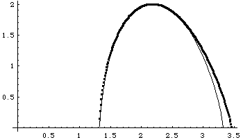

| Generate, say, 10000 points by applying the IFS |
| T3(x, y) = (x/2, y/2) + (0, 1/2) |
T4(x, y) = (x/2, y/2) + (1/2, 1/2) |
| T1(x, y) = (x/2, y/2) |
T2(x, y) = (x/2, y/2) + (1/2, 0) |
|
| with the probabilities |
| p3 = 0.3 | p4 = 0.4 |
| p1= 0.1 | p2 = 0.2 |
|
| Here we apply the method of moments for planar data to compute the f(α) curve, taking
{s1, s2, s3, s4} =
{1/3, 1/4, 1/5, 1/6}, and q ranges from -22 to
+20 in steps of 0.25. |
|  |
| The dots are the points computed from the data using the method of moments; the
curve is calculated from the IFS parameters using |
| f(α) = q⋅α(q) + τ(q), | with |
| α(q) = (p1qlog(p1) + ... + p4qlog(p4))/log(r)⋅(p1q + ... + p4q) |
when all ri = r. |
| τ(q) = -log(p1q + ... + p4q)/log(r) |
when all ri = r. |
| |
|